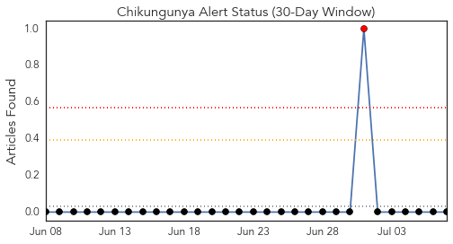
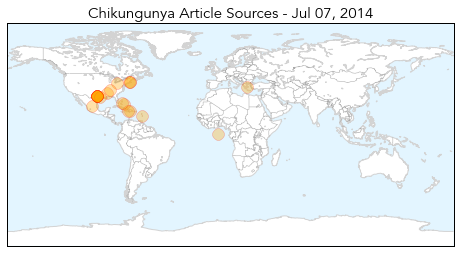
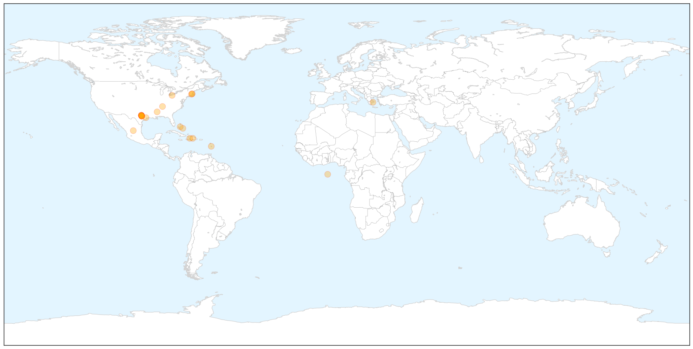
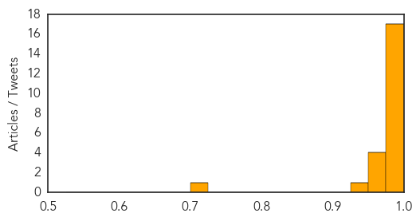
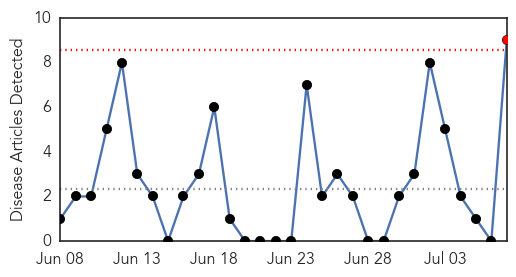
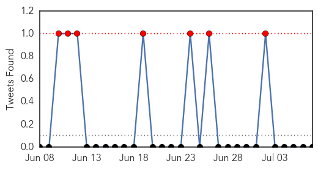
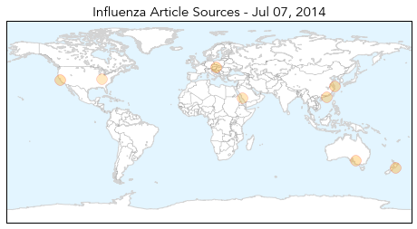
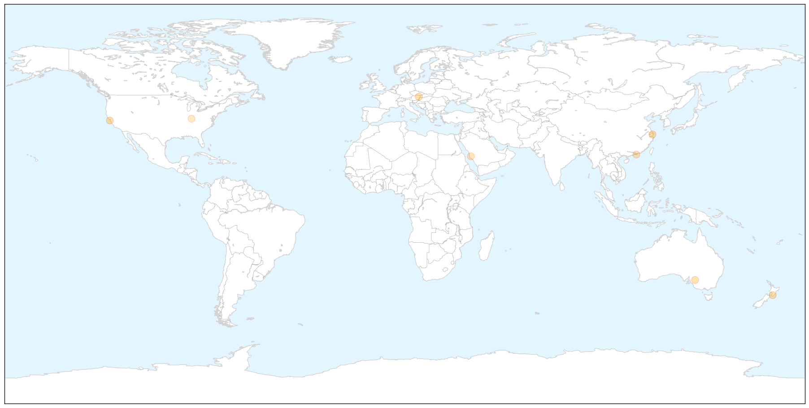
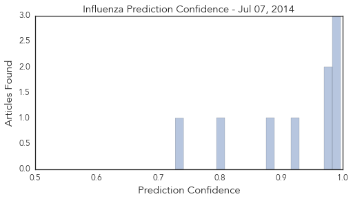

Chikungunya
30-Day Web Trend
10 alerts, 7 warnings

30-Day Twitter Trend
0 alerts, 0 warnings

Article Locations

X

Article Confidences
Top Articles:
- 1.000
- Caribbean mosquito-borne illness discovered in Texas patient
- 1.000
- Four cases of chikungunya in Boston area, confrim health officials
- 1.000
- Texas confirms first case of chikungunya in Williamson County traveler
- 1.000
- Texas confirms state's first chikungunya case
- 0.999
- Tennessee Warns of a Massive Chikungunya Outbreak
- 0.999
- UN "Parade Of The Horribles"
- 0.999
- Cases of Chikungunya Reported in 3 States
- 0.999
- Chikungunya — the next West Nile?
- 0.998
- Caribbean mosquito-borne virus making its way to U.S.
- 0.997
- Texas confirms first case of newly emerging virus
- 0.995
- Hispaniola hot spots boost chikungunya cases over 300,000
- 0.994
- Mosquito-transmitted disease diagnosed in Williamson Co.
- 0.994
- Texas confirms first case of mosquito-borne virus
- 0.990
- French tourist becomes first person to contract Chikungunya in Costa Rica - Inside Costa Rica
- 0.988
- Chikungunya illnesses continue to spread
- 0.988
- Dallasblog.com, the Dallas, Texas news blog and Dallas, Texas information source for the DFW Metroplex.
- 0.977
- Texas Confirms First Human Case Of Chikungunya, A Mosquito-Borne Illness
- 0.975
- Chikungunya virus found in Williamson County resident
- 0.971
- 4 Chikungunya cases reported in Boston, no threat to public
- 0.959
- Chikungunya virus confirmed in Texas, health officials warn to avoid mosquito bites
- 0.958
- Chikungunya Fever case confirmed in Bahamas
- 0.948
- Ministry of Health advises public on Chikungunya Fever
- 0.708
- Sentinel & Enterprise
Top Tweets:
-
No tweets found for Jul 07, 2014
Influenza
30-Day Web Trend
1 alerts, 0 warnings

30-Day Twitter Trend
4 alerts, 0 warnings

Article Locations

X

Article Confidences
Top Articles:
- 0.997
- Universal vaccine could put brakes on flu
- 0.988
- 50 Member States meet to discuss influenza surveillance
- 0.986
- Chlamydia incidence higher than flu in Halton in 2013
- 0.977
- No poultry contact in some China bird flu cases
- 0.975
- Deadly influenza strain back with a vengeance
- 0.924
- Predict mutants to create universal flu vaccine
- 0.877
- Taiwanese health officials confirm two additional lab cases of avian flu
- 0.799
- Pilgrims urged to take vaccinations before going to Mecca
- 0.728
- Patient choice and hospital capacity during a pandemic
Top Tweets:
-
No tweets found for Jul 07, 2014